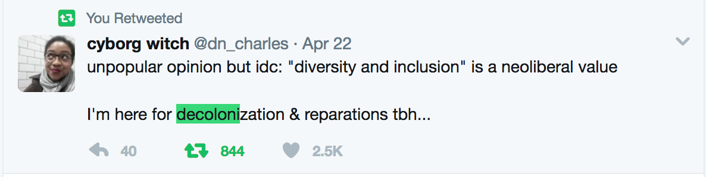
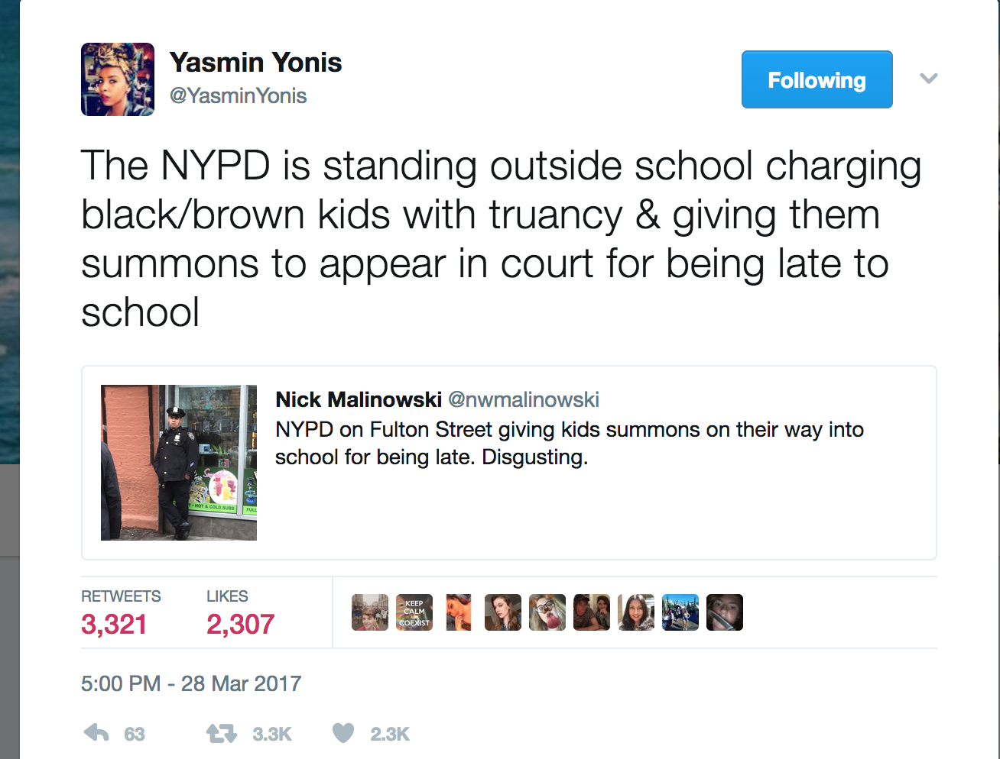
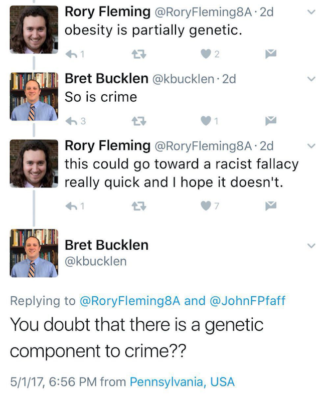
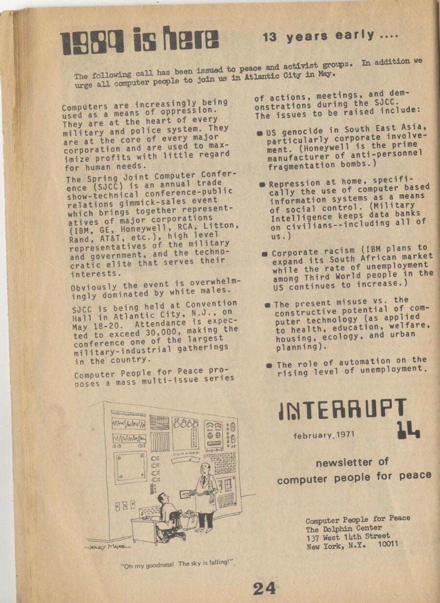

Created: 2017-05-09 Tue 23:04
"Without slavery you have no cotton; without cotton you have no modern industry. It is slavery that has given the colonies their value; it is the colonies that have created world trade, and it is world trade that is the pre-condition of large-scale industry. Thus slavery is an economic category of the greatest importance.
Without slavery North America, the most progressive of countries, would be transformed into a patriarchal country. Wipe out North America from the map of the world, and you will have anarchy — the complete decay of modern commerce and civilisation. Cause slavery to disappear and you will have wiped America off the map of nations."
"You will unite yourselves with us and we shall all be Americans. You will mix with us by marriage. Your blood will run in our veins and will spread with us over this great Island. " – President Thomas Jefferson, 1808, to visiting Indian delegation
They also played a major role in preventing slaves from escaping to the North through regular patrols on rural roads."




"As an abolitionist, who believes that we must create the conditions for dismantling prisons, police, and surveillance, I’m often asked how to build new institutions that will ensure actual safety. My answer is always the same: collective organizing. Currently, there are a range of decarceral/anti-carceral strategies being employed across the country to free prisoners, individually and collectively. People are organizing for bail reform, taking on individual parole support for prisoners, engaging in court watches, launching mass commutation campaigns, and advocating for laws that will offer new pathways for release." - https://thenewinquiry.com/free-us-all/ by Mariame Kaba, aka @prisonculture
shaming and shunning engineers who build these things, technical sabotage through adversarial examples…